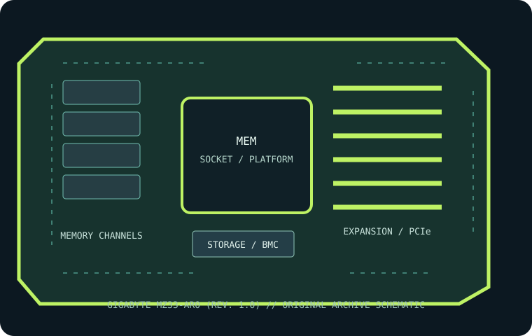

[ INDIVIDUAL COMPONENT // MOTHERBOARDS ]
GIGABYTE MZ33-AR0 (rev. 1.0)
Single-socket SP5 E-ATX server board for AMD EPYC 9004/9005 processors, with 24 DDR5 RDIMM sockets and four PCIe 5.0 slots. This record identifies the stated model/revision; confirm the PCB label and use the matching vendor support files.

REVISION WARNING: Similar model names, board revisions and firmware may differ in CPU support, lane routing or connectors. Identify the silkscreen and assembly code before installation or firmware updates.
Specifications
| Catalog subcategory | Workstation and server boards |
|---|---|
| Exact model / era | GIGABYTE MZ33-AR0 (rev. 1.0) — Single-socket SP5 E-ATX server board for AMD EPYC 9004/9005 processors, with 24 DDR5 RDIMM sockets and four PCIe 5.0 slots. (2023) |
| CPU and socket / SoC | One AMD EPYC 9004 or 9005 series SP5 processor; verify exact model, up-to-400 W cTDP and required BIOS against the revision-specific CPU support list. |
| Chipset / platform | AMD EPYC 9004 SoC platform. |
| Memory and ECC | Twenty-four DDR5 ECC Registered DIMM sockets in a 12-channel arrangement (two DIMMs per channel); up to 6 TB per socket and up to DDR5-4800 are CPU/DIMM-configuration dependent. |
| PCIe and form factor | E-ATX (305 × 330 mm); four PCIe 5.0 x16 slots sourced from EPYC integrated lanes. |
| Storage | One M.2 2280/22110 PCIe 4.0 x4 socket; seven MCIO 8i connectors (two PCIe 5.0 x8 or SATA, four PCIe 5.0 x8, one PCIe 4.0 x8), configurable for NVMe/SATA cabling. Consult the revision manual for exact drive mapping. |
| BMC and networking | ASPEED AST2600 BMC/IPMI remote management, dedicated management interface, and dual 10GbE data networking. |
Compatibility and revision notes
Use a single supported EPYC 9004 CPU and DDR5 ECC RDIMMs in the specified 12-channel order. Verify revision/BIOS, CPU heat sink and cTDP airflow, BMC firmware, PCIe slot/lane map and storage cabling against the manufacturer manual.
Socket type, connector shape, chipset branding and CPU family alone do not establish compatibility. Confirm the exact CPU support list, minimum BIOS, ECC/DIMM type and population, shared PCIe/storage lanes, power inputs and dimensions in the linked model-specific vendor documentation.
Preservation and repair
Record the board revision, serial label, BIOS and BMC versions, MAC addresses, attached risers/cables and test conditions before servicing. Use the vendor's socket procedure, ESD-safe handling and correct chassis airflow; do not cross-flash firmware from a related SKU.
Photograph PCB labels, connector condition and accessories before cleaning. Keep BMC access credentials in secure inventory, and never power the board with loose conductive hardware beneath it.
Sources & further reading
- GIGABYTE MZ33-AR0 (rev. 1.0) — manufacturer specifications and product referencePrimary product reference for platform, board configuration and feature summary.
- GIGABYTE MZ33-AR0 (rev. 1.0) — manufacturer support, manual and firmware resourcesUse the exact revision-specific manual, CPU support list and firmware package before service.
Manufacturer model-specific documentation takes precedence. Confirm details for the exact printed board revision.